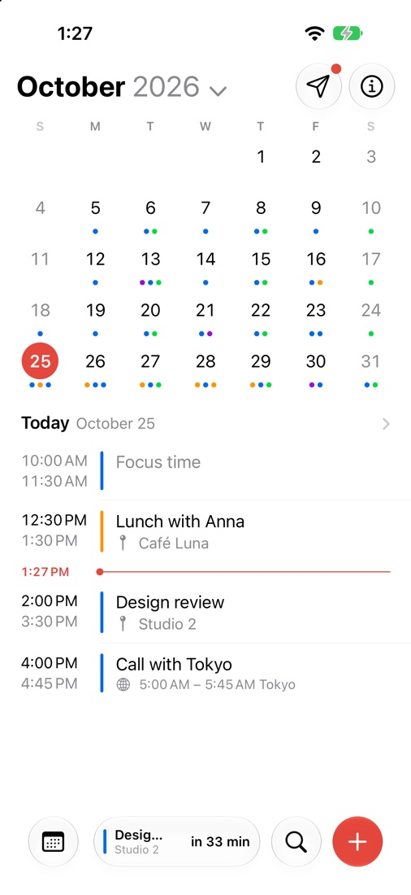
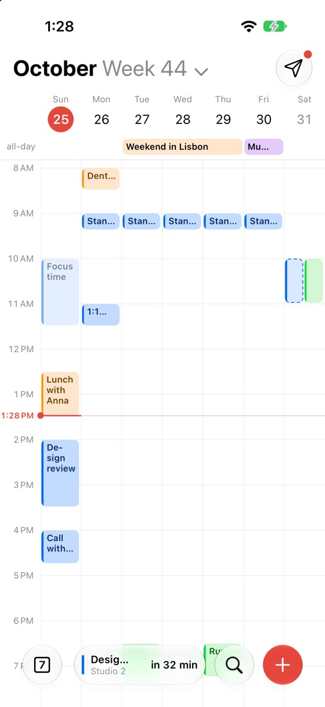
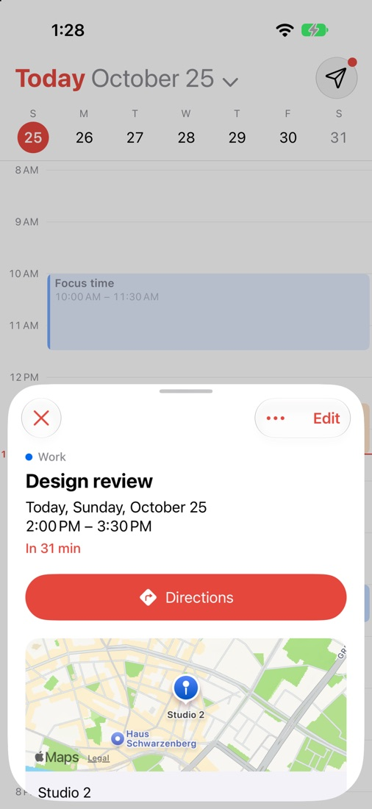
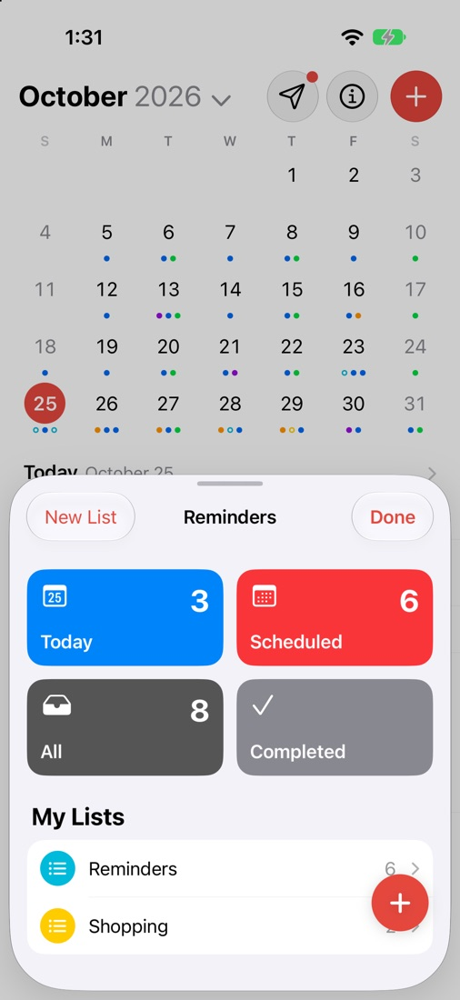
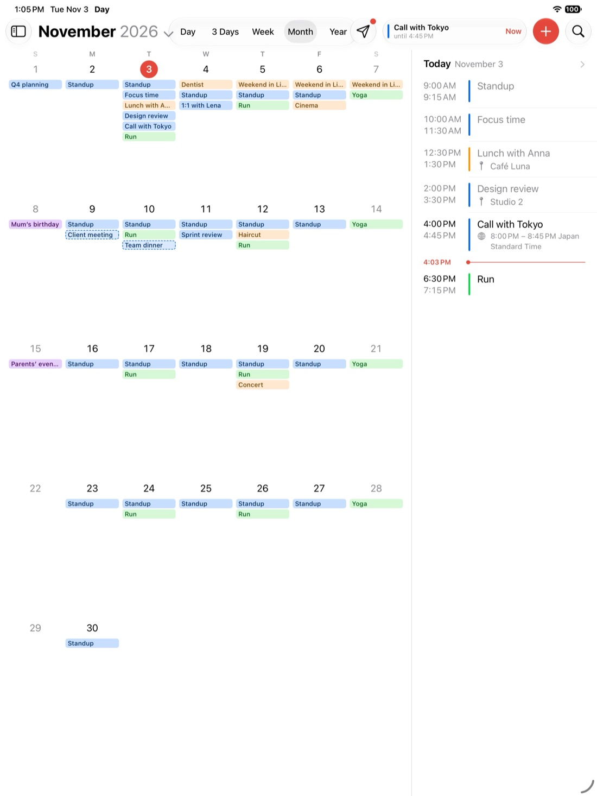
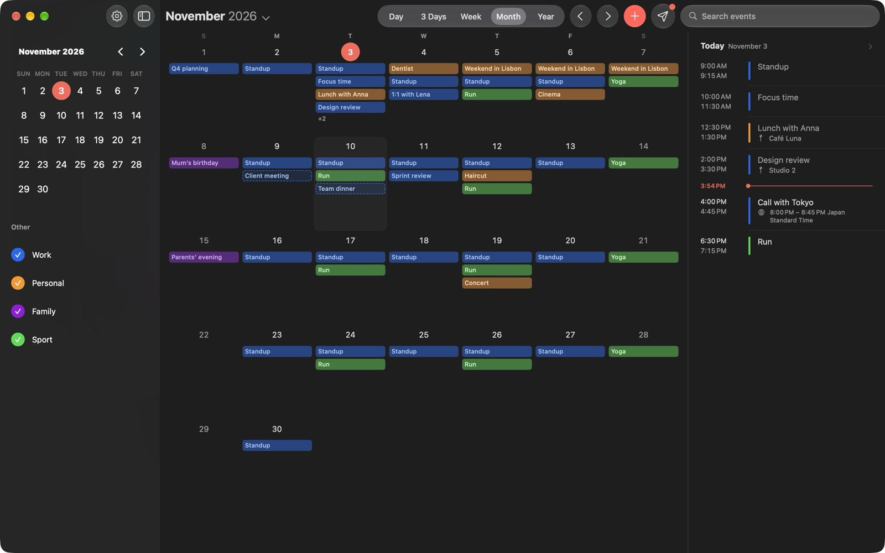

Dein Tag, auf einen Blick.
Day zeigt die Kalender, die du schon hast, iCloud, Google, Exchange und andere, zusammen mit deinen Erinnerungen. Eine ruhige App für iPhone, iPad, Mac und Apple Watch.
iOS 18, macOS 15 oder neuer · Kein Day-Konto · Kein Tracking




Ein Kalender, der nicht im Weg steht
Day verlangt keinen Umzug. Die App liest und schreibt die Kalender deines Geräts, sodass jede andere App zeigt, was du in Day änderst.
Jede Ansicht, die du brauchst
Tag, 3 Tage, Woche, Monat und Jahr. Mit Zusammenziehen wechselst du zwischen ihnen, und auf der Zeitleiste zoomst du die Stunden. Kalenderfarben und Zeitzonen helfen beim Einordnen.
Termine in einer Zeile
Tippe oder sprich „Mittagessen mit Anna morgen um 13 Uhr“ und prüfe, was Day verstanden hat, bevor es angelegt wird. Datum und Uhrzeit liest dein Gerät, mit Apple Intelligence oder einem optionalen Modell auf dem Gerät auch weitere Angaben.
Erinnerungen direkt im Kalender
Erinnerungen aus der Apple-App „Erinnerungen“, die ein Datum haben, erscheinen neben deinen Terminen. Hake sie ab, ziehe sie auf eine andere Zeit und zeige deine Listen als Karten, mit eigenen Gruppen.
Das Nächste, überall
Widgets von klein bis groß auf Home- und Sperrbildschirm. Eine Live-Aktivität mit Countdown und Teilnehmen oder Route. Steuerelemente für das Kontrollzentrum und die Action-Taste.
Für iPad und Mac gemacht
Größere Bildschirme bekommen größere Ansichten: Terminnamen in jedem Tag des Monats, sieben volle Spalten in der Woche. Auf dem Mac gibt es Menüleiste, Tastaturkürzel und Popover wie im Kalender.
Am Handgelenk
Die Apple-Watch-App zeigt deine Agenda mit Termindetails, und Komplikationen bringen den aktuellen oder nächsten Termin aufs Zifferblatt.
Orte und Reisezeit
Wähle einen Ort aus Apple Karten, und Day sagt dir, wann du losmusst. Links zu Zoom, Meet, Teams und mehr öffnen sich in der passenden App.
Privat von Grund auf
Kein Konto, kein Server, kein Tracking. Deine Termine bleiben in deinen Kalendern. Das Datenschutz-Manifest von Day erklärt, dass keine Daten erhoben werden.
In deiner Sprache
Deutsch, Englisch, Chinesisch (vereinfacht und traditionell), Japanisch, Französisch, Spanisch, brasilianisches Portugiesisch, Italienisch und Koreanisch.
Eine App, drei Bildschirme
Dasselbe Day auf iPhone, iPad und Mac, jeweils für die Art, wie du das Gerät hältst.
iPad
Alle Ausrichtungen, Split View und Stage Manager. Der Monat zeigt Terminnamen in jedem Tag, die Woche hat Platz für sieben volle Spalten, und die Tastaturkürzel funktionieren wie erwartet.

Mac
Eine echte Mac-App, mit ⌘N für einen neuen Termin, ⌘T für heute, ⌘1 bis ⌘5 für die Ansichten, ⌘F für die Suche und ⌘, für die Einstellungen. Klicke einen Termin an, und ein Popover zeigt auf ihn. Ziehen verschiebt.

Hilfe
Day zeigt keine oder nicht alle Termine.
Day braucht vollen Zugriff auf deine Kalender: iOS-Einstellungen → Datenschutz & Sicherheit → Kalender → Day → „Voller Zugriff“. In Day wählst du unter Einstellungen → Kalender, welche Kalender erscheinen.
Wie füge ich einen Google- oder Exchange-Kalender hinzu?
Richte das Konto in den iOS-Einstellungen unter Apps → Kalender → Kalenderaccounts ein. Day zeigt es danach automatisch an. Termine werden über diese Konten synchronisiert, nicht über Day.
Wo werden meine Termine gespeichert?
In deinen eigenen Kalendern. Day hat keinen eigenen Server und kopiert keine Termine. Was du in Day änderst, landet direkt im jeweiligen Kalender.
Wie sehe ich meine Erinnerungen in Day?
Schalte Erinnerungen in den Einstellungen von Day ein (Day fragt einmal beim ersten Öffnen) und wähle die Listen, die erscheinen sollen. Erinnerungen mit Datum erscheinen dann im Kalender. Wenn du eine in Day abhakst, ist sie auch in Erinnerungen erledigt.
Warum fehlen meine Gruppen aus Erinnerungen?
Apple gibt die Gruppen aus Erinnerungen nicht an andere Apps weiter. Day hat deshalb eigene Gruppen für deine Listen. Sie liegen in Day und ändern nichts in Erinnerungen.
Was ist das Modell auf dem Gerät für „Schnell hinzufügen“?
„Schnell hinzufügen“ liest Datum und Uhrzeit mit dem Datumserkenner des Systems, und mit Apple Intelligence erkennt sie auch Titel, Ort und Wiederholung. Wenn du das ohne Apple Intelligence willst, kannst du unter Einstellungen → Schnell hinzufügen einmal ein kleines Sprachmodell laden. Es läuft auf deinem Gerät, was du tippst, verlässt es also nicht.
Wie funktionieren Reisezeiten und Aufbruch-Erinnerungen?
Für Termine mit Ort kann Day bei Apple Karten erfragen, wann du losmusst, und dich rechtzeitig erinnern. Dafür braucht Day deinen Standort, solange die App verwendet wird. Einschalten unter Einstellungen → Erinnerungen → Aufbruch-Erinnerungen.
Kann ich Google Maps oder einen anderen Browser verwenden?
Ja. Unter Einstellungen → Standard-Apps wählst du, womit Wegbeschreibungen und Links geöffnet werden.
Wie bleiben meine Einstellungen auf allen Geräten gleich?
Mit Einstellungen → Allgemein → „Einstellungen mit iCloud synchronisieren“ folgen ausgewählte Einstellungen über deine iCloud auf deine anderen Geräte. Welche Kalender angezeigt werden, bleibt pro Gerät.
Kontakt
Fragen, Fehler oder Ideen? Schreib an getaiityapp+day@gmail.com. Hilfreich sind Gerät, iOS- oder macOS-Version und was genau passiert ist.
Datenschutz: Datenschutzerklärung · Privacy policy